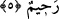
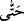

5. Eğer onlar, sen yanlarına çıkıncaya kadar sabretselerdi, elbette kendileri için
daha iyi olurdu. Allah çok bağışlayan, çok esirgeyendir.
Sabır, arzusuna iştiyak duymaktan nefsi engellemektir. Âyetteki “eğer” anlamına gelen
() edatı, dilcilerden Müberrid, Zeccâc ve Kûfelilere göre fiile hastır. Dolayısıyla bu
edattan sonra gelen ifâde Sîbeveyh’in dediği gibi mübtedâ olarak değil, fâil olarak
merfû olur. Mânâ şöyle olur: “Sen onların yanına çıkıncaya kadar sabır ile
beklemeleri tahakkuk etseydi…” () edâtı, sabrın Efendimiz (s.a.)’in çıkışına kadar
devam etmesi gerektiğini ifade eder. Çünkü bu edat “bir şeyin kendisi içerisindeki en
son noktaya kadar” anlamına gelir. Âyetteki () ifadesinde ise Hz. Peygamber (s.a.)
başka bir gaye için çıkarsa, kendilerine bir şey söylemedikçe veya yönelmedikçe
sabretmeleri gerektiğine dair bir işaret vardır. “elbette kendileri için…” bahsi geçen
sabır, acele etmekten “daha hayırlı olurdu.”
Bu ifâdede hüsn-i edebe riâyet ve Rasûlullah (s.a.)’e ta’zîm vardır. Bunlar ise övülen
davranışlar olup insana sevap kazandırır. Aynı zamanda kişi bu sayede istediği şeyi
daha rahat elde eder. Nitekim rivâyete göre onlar Benî Anber esirlerine şefaatçi olarak
gelmişlerdi.
Kâmûs’ta der ki: Amber, Temîm kabîlesinden Ebû Hayy’dir. İbn Abbas (r.a.) şöyle
der: “Rasûlullah (s.a.) Benî Amber kabîlesine bir seriyye gönderip başına da Uyeyne b.
Husayn (r.a.)’ı tayin etti. Seriyyenin kendilerine doğru geldiğini anlayınca çoluk
çocuklarını bırakıp kaçtılar. Uyeyne (r.a.) onları esir alıp Rasûlullah (s.a.)’e getirdi.
Daha sonra kabîlenin erkekleri çocuklarını kurtarmak için öğle vakti Medine’ye
geldiler. Rasûlullah (s.a.) ailesinin yanında uyuyordu. Rasûlullah (s.a.)’in
hanımlarından her biri için bir ev ve bir oda vardı. Çocuklar, babalarını görünce
hıçkırarak ağlamaya başladılar. Onlar da “Ya Muhammed! Ya Muhammed!” diye nidâ
etmeye başladılar. Sonunda onu uykusundan uyandırdılar. Rasûlullah (s.a.) onların
yanına çıkınca “Fidye karşılığı ailelerimizi bize geri ver” dediler. Bunun üzerine
Cebrâil (a.s.) inip şöyle dedi: “Allah Teâlâ seninle onlar arasında birini tayin etmeni
emrediyor.” Efendimiz (s.a.) onlara “Sebre b. Amr’ın aramızda hakem olmasına razı
olur musunuz? O sizin dininizdendir” buyurdu. Onlar da “Evet” dediler. Sebre dedi ki:
“Amcam buradayken ben hakemlik yapamam.” Amcası A’ver b. Bişame b. Dırâr’dı.
Ona razı oldular. A’ver şöyle dedi: “Ben yarısını fidye karşılığı serbest bırakmanı diğer
yarısını da âzâd etmeni uygun buluyorum.” Bunun üzerine Efendimiz (s.a.) “Ben bu
hükme razıyım” buyurdu ve yarısını fidye karşılığı serbest bırakıp diğer yarısını da
âzâd etti. Mukâtil der ki: “Kendileri için daha iyi olurdu.” Çünkü normalde sen
onların tamamını âzâd edecek ve fidyesiz bir şekilde serbest bırakacaktın.”[167]
Mağfireti ve rahmeti çoktur, geniştir; tövbe edip sâlih amel işlerlerse Allah’ın rahmeti
ve mağfireti bu sû-i edepte bulunan kimselere de şâmil olacaktır.